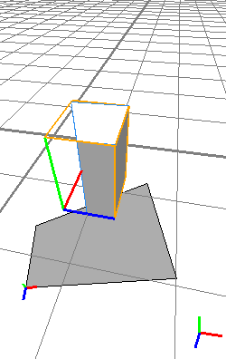

rotate operation
rotate(mode, coordSystem, xAngle, yAngle, zAngle)
mode selector
| abs | Absolute mode. The angles are set to the given values. |
| rel | Relative mode. The angles are added to the current orientation. |
coordSystem selector
| scope, pivot, object, world | Name of the coordinate system in which the following angles are given. |
xAngle, yAngle, zAngle float Angles in degrees to rotate about each axis.
The rotate operation rotates the current shape (it manipulates the scope orientation scope.r). The angles can be defined in any coordinate system, and the rotation can either be absolute (= set the angles) or relative (= add the angles).
Related
Examples
Set scope orientation to world coordinate system angles

Init -->
extrude(10)
t('0.2, 0, '0.3)
s('0.5, '1, '0.5)
rotate(abs, world, 0, 90, 0)
Using the absolute mode, the scope orientation can be set to an orientation relative to the world origin.